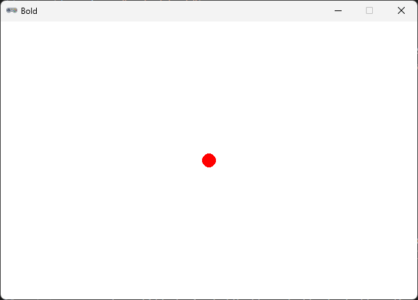

Resultatet af koden nedenfor er en bold som bevæger sig over skærmen.
Når den rammer kanterne ændre den farve og retning.
Klikker du med musen skrives der noget tekst i konsollen.
Bemærk linje nummer fortæller hvor de små bider af koden skal indsættes i forhold til hinanden.
Vi skriver koden i Mu Editor og mode er sat til Pygame Zero.
Pygame Zero har nogle indbygget variabler
WIDTH = 600
HEIGHT = 400
TITLE = "Bold" Gem filen som bold.py og klik på Play
Det er muligt at bestemme hvor vinduet starter på skærmen.
klik på det lille tandhjul i Mu Editor vinduet nederst til højre.
Sæt start koordinat for vinduets top venstre hjørne
SDL_VIDEO_WINDOW_POS=100,200Sæt start placering mit på skærmen
SDL_VIDEO_WINDOW_POS=CENTERDette er en indbygget funktion i Pygame Zero.
Den køre automatisk når der er behov for at opdater det som vises på skærmen
def draw():
screen.clear()
screen.fill((255,255,255))Vi opretter nogle variabler som skal bruges til vores bold
ball_radius = 10
ball_x = WIDTH // 2
ball_y = HEIGHT // 2
ball_color = "red"
Vi må nu tilpasse draw() function så vi får tegnet bolden
def draw():
screen.clear()
screen.fill((255,255,255))
screen.draw.filled_circle((ball_x, ball_y), ball_radius, ball_color)
Afprøv
Vi skal nu gerne have et program vindue som ser sådan her ud
WIDTH = 600
HEIGHT = 400
TITLE = "Bold"
ball_radius = 10
ball_x = WIDTH // 2
ball_y = HEIGHT // 2
ball_color = "red"
def draw():
screen.clear()
screen.fill((255,255,255))
screen.draw.filled_circle((ball_x, ball_y), ball_radius, ball_color)
Prøv at finde ud af hvordan du ændre:
Med denne kode finder vi ud af hvor på skærmen der bliver klikket.
Hvis der bliver klikket på bolden skriver vi en tekst i terminalen,
hvis vi ikke klikker på bolden skriver vi en anden tekst.
def on_mouse_down(pos):
dx = pos[0] - ball_x
dy = pos[1] - ball_y
if dx * dx + dy * dy <= ball_radius * ball_radius:
print("Du ramte mig!")
else:
print("Forbi! Ha Ha :-)")
Afprøv ved at klikke forskellige steder i program vinduet.
Hold øje med nederste del af Mu Editor (terminalen)
Der laves en Pythagoras beregning (retvinklet trekant) fra boldens centrum til musens placering
Der laves så en sammenligning med afstand på bolden selv (radius).
På den måde ved vi om klikket er inden i bolden eller udenfor.
Vi behøver ikke at tage kvadratroden på hver side for at sammenligne.
men det var måske mere tydeligt hvis vi skrev betingelsen således:
if math.sqrt(dx * dx + dy * dy) <= math.sqrt(ball_radius * ball_radius):Det ville dog også have krævet at vi benyttede math biblioteket
import mathVi skal have oprettet to variabler for boldens hastighed og retning.
ball_vx = 3
ball_vy = 1
Vi skal også have tilføjet Pygame Zero's update() funktion
Denne funktion køre 60 gange i sekundet og vi kan derfor i denne funktion ændre boldens placering på skærmen.
når vi har ændret boldens placering, køre draw() automatisk og billedet bliver opdateret
def update():
global ball_x, ball_y, ball_vx, ball_vy
ball_x += ball_vx
ball_y += ball_vy
Bemærk at vi benytter global og lister variablerne som vi ønsker at ændre indefra update() funktionen
global ball_x, ball_y, ball_vx, ball_vyVores to variabler vx og vy er det man kalder en vektor.
For hvert frame flytter vi bolden i x og y retning som her på billdet.
Du kan ændre hastighed ved at øge tal værdien og du kan ændre retning ved at ændre fortegn.
Prøv:
ball_vx = -5
ball_vy = 1
Vi vil gerne have bolden til at skifte retning når den rammer program vinduets vægge.
tilføj disse linjer til update(funktionen)
if ball_x <= 0 or ball_x >= WIDTH:
ball_vx = -ball_vx
if ball_y <= 0 or ball_y >= HEIGHT:
ball_vy = -ball_vy
Hvis vi kigger godt efter så kan vi se at halv delen af bolder er uden for kanterne.
for at rette op på det må vi tage højde for boldens radius.
Ændre linjerne så de ser sådan her ud:
if ball_x - ball_radius <= 0 or ball_x + ball_radius >= WIDTH:
ball_vx = -ball_vx
if ball_y - ball_radius <= 0 or ball_y + ball_radius >= HEIGHT:
ball_vy = -ball_vy
Lad os leg lidt med boldens farve.
tilføj ball_color variablen i update() funktionen, så vi kan ændre dens værdi
global ball_x, ball_y, ball_vx, ball_vy, ball_colorTilføj nu disse to linjer:
ball_color = "yellow" ball_color = "black"Du har nu kodet et lille program hvor en bold bevæger sig over skærmen.
Når den rammer kanterne ændre den farve og retning.
Klikker du med musen skrives der noget tekst i konsollen.
WIDTH = 600
HEIGHT = 400
TITLE = "Bold"
ball_radius = 10
ball_x = WIDTH // 2
ball_y = HEIGHT // 2
ball_color = "red"
ball_vx = 3
ball_vy = 1
def update():
global ball_x, ball_y, ball_vx, ball_vy, ball_color
ball_x += ball_vx
ball_y += ball_vy
if ball_x - ball_radius <= 0 or ball_x + ball_radius >= WIDTH:
ball_vx = -ball_vx
ball_color = "yellow"
if ball_y - ball_radius <= 0 or ball_y + ball_radius >= HEIGHT:
ball_vy = -ball_vy
ball_color = "black"
def draw():
screen.clear()
screen.fill((255,255,255))
screen.draw.filled_circle((ball_x, ball_y), ball_radius, ball_color)
def on_mouse_down(pos):
dx = pos[0] - ball_x
dy = pos[1] - ball_y
if dx * dx + dy * dy <= ball_radius * ball_radius:
print("Du ramte mig!")
else:
print("Forbi! Ha Ha :-)")Hint: Benyt en variable som hedder counter og brug denne kode til at vise tekst på skærmen
screen.draw.text("Counter: " + str(counter),(10,10),color = "black")